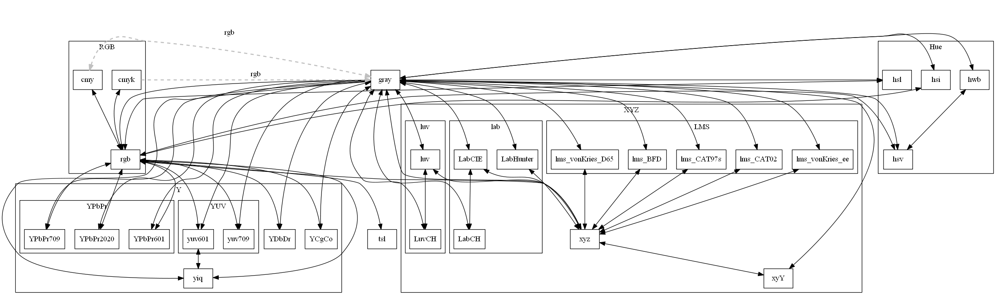

Direct conversion Graph
TOC
Description
Graph
Legend
Description
Show which models can be directly converted to each other.
Graph

Legend
Gray dashed line: in line use of of RGB as intermediate model.
Solid black line: direct conversion.